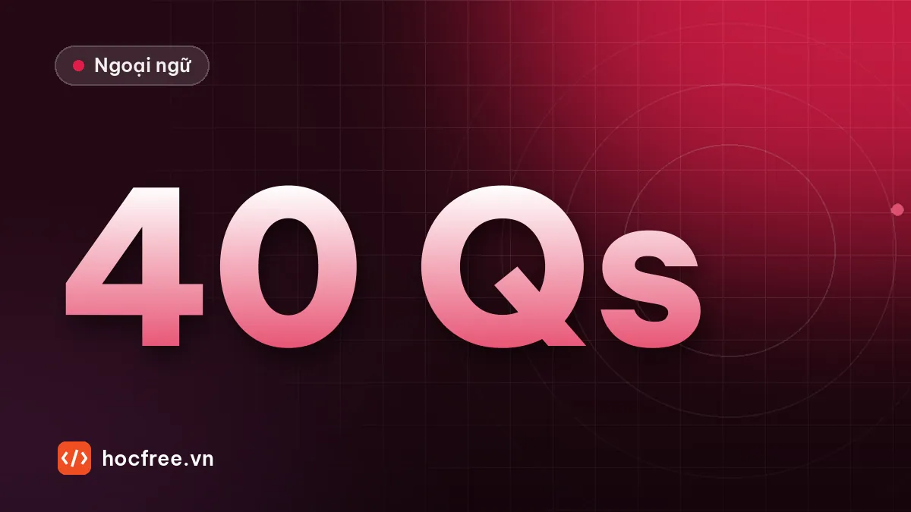

Luyện tập 40 câu từ loại và thì kiểu Part 5 có giải thích
40 câu tự biên soạn theo định dạng Part 5 về từ loại, thì và hòa hợp chủ vị, chia 2 lượt bấm giờ, đáp án kèm giải thích ngắn từng câu.

Học xong bài này, bạn sẽ
- Áp dụng quy trình giải câu từ loại và câu thì
- Đạt 80% đúng, dưới 30 giây mỗi câu
- Ghi lỗi sai vào sổ theo nhóm
Nên học trước: Hòa hợp chủ ngữ – động từ
Nội dung bài viết
Bài thực hành này gom toàn bộ chặng 2 vào 40 câu theo định dạng Part 5, do HọcFree tự biên soạn. Mục tiêu: đúng từ 32/40 câu (80%) và làm mỗi lượt 20 câu trong 10 phút. Đây là nhịp bạn sẽ cần khi thi thật, vì phải để dành thời gian cho Part 7.
Cách làm
- Chuẩn bị giấy và đồng hồ bấm giờ. Làm Lượt 1 (câu 1–20) trong 10 phút, không tra từ.
- Nghỉ 2 phút, làm Lượt 2 (câu 21–40) trong 10 phút.
- Chấm điểm. Với mỗi câu sai, xác định nhóm: từ loại (TL), thì (TH), hòa hợp (HH), cấu trúc câu (CC).
- Ghi câu sai vào sổ lỗi, kèm quy tắc rút ra.
Lượt 1: câu 1–20
1. The new manager has made several ______ changes to the schedule. (A) signify (B) significant (C) significantly (D) significance
2. Our office ______ closed on national holidays. (A) is (B) are (C) be (D) being
3. Ms. Ha ______ the training program since she joined the company. (A) leads (B) led (C) has led (D) will lead
4. Please fill out the form ______ and return it to reception. (A) complete (B) completely (C) completion (D) completing
5. The ______ of the new bridge will reduce traffic in the city center. (A) open (B) opened (C) opening (D) opens
6. The technicians ______ the air conditioners at the moment. (A) check (B) checked (C) are checking (D) have checked
7. The prices listed in the catalog ______ tax. (A) includes (B) include (C) including (D) is including
8. All employees must wear ______ clothing in the production area. (A) protect (B) protection (C) protective (D) protectively
9. We ______ the final payment two days ago. (A) receive (B) received (C) have received (D) will receive
10. The software update will make the system run more ______. (A) smooth (B) smoothly (C) smoothness (D) smoothest
11. Mr. Kwon will contact you when he ______ back from Busan. (A) gets (B) will get (C) got (D) getting
12. One of the printers on the second floor ______ not working. (A) are (B) were (C) is (D) have
13. The marketing director gave a very ______ speech at the launch event. (A) inspire (B) inspiring (C) inspiration (D) inspiringly
14. Our company ______ in office furniture for more than 20 years. (A) specializes (B) specialized (C) has specialized (D) specializing
15. The board will make a final ______ next week. (A) decide (B) decisive (C) decision (D) decisively
16. The shipment was delayed ______ because of the storm. (A) main (B) mainly (C) mains (D) maintain
17. By the time the guests arrived, the staff ______ the conference room. (A) prepare (B) have prepared (C) had prepared (D) will prepare
18. The information you requested ______ attached to this e-mail. (A) are (B) is (C) were (D) have
19. Ms. Pham is ______ qualified for the supervisor position. (A) high (B) higher (C) highly (D) height
20. The company plans to ______ its product line next year. (A) diverse (B) diversity (C) diversify (D) diversely
Xem đáp án lượt 1
| Câu | Đáp án | Nhóm | Lý do |
|---|---|---|---|
| 1 | B | TL | Trước danh từ changes → tính từ |
| 2 | A | HH | Our office số ít |
| 3 | C | TH | since → hiện tại hoàn thành |
| 4 | B | TL | Bổ nghĩa động từ fill out → trạng từ |
| 5 | C | TL | Sau The, trước of → danh từ (V-ing dùng như danh từ: việc khánh thành) |
| 6 | C | TH | at the moment → hiện tại tiếp diễn |
| 7 | B | HH | Chủ ngữ The prices số nhiều; include không dùng tiếp diễn |
| 8 | C | TL | Trước danh từ clothing → tính từ |
| 9 | B | TH | two days ago → quá khứ đơn |
| 10 | B | TL | run more ___ → trạng từ |
| 11 | A | TH | Sau when nói về tương lai → hiện tại đơn |
| 12 | C | HH | One of → số ít |
| 13 | B | TL | Sau very, trước danh từ → tính từ |
| 14 | C | TH | for more than 20 years → hiện tại hoàn thành |
| 15 | C | TL | Sau tính từ final → danh từ; make a decision |
| 16 | B | TL | Bổ nghĩa cụm because of → trạng từ |
| 17 | C | TH | By the time + quá khứ → quá khứ hoàn thành |
| 18 | B | HH | information không đếm được; you requested là mệnh đề quan hệ đã lược bỏ that |
| 19 | C | TL | Bổ nghĩa tính từ qualified → trạng từ; highly qualified là collocation |
| 20 | C | TL | Sau to → động từ |
Lượt 2: câu 21–40
21. The number of online orders ______ risen sharply this quarter. (A) have (B) has (C) is (D) are
22. Visitors are asked to sign in ______ entering the building. (A) before (B) during (C) since (D) until
23. The factory ______ 500 workers when it first opened in 2015. (A) employs (B) has employed (C) employed (D) is employing
24. The project was completed ______ ahead of schedule. (A) success (B) successful (C) successfully (D) succeed
25. The seminar ______ at 9:30 tomorrow morning in Room B. (A) starts (B) started (C) has started (D) starting
26. Mr. Tan and his team ______ responsible for the product launch. (A) is (B) are (C) was (D) has been
27. We need to find a more ______ way to store the data. (A) efficiency (B) efficient (C) efficiently (D) efficiencies
28. Several ______ have applied for the position of sales manager. (A) candidacy (B) candidate (C) candidates (D) candidacies
29. The new branch will open once the renovation ______. (A) is finished (B) will be finished (C) finishing (D) finished
30. The director ______ approved the budget for next year. (A) final (B) finally (C) finalize (D) finality
31. Neither the manager nor the assistants ______ aware of the change. (A) was (B) is (C) were (D) has been
32. Ms. Lee ______ a report when the power went out. (A) writes (B) was writing (C) has written (D) is writing
33. The new policy has received strong ______ from employees. (A) support (B) supportive (C) supportively (D) supported
34. Each department ______ its own budget. (A) manage (B) manages (C) managing (D) are managing
35. By next March, we ______ in this building for ten years. (A) work (B) worked (C) will have worked (D) have worked
36. The equipment must be handled ______ to avoid damage. (A) caution (B) cautious (C) cautiously (D) cautioned
37. Our sales representatives ______ clients in the northern region every month. (A) visit (B) visits (C) visiting (D) is visiting
38. The hotel offers a ______ breakfast to all guests. (A) compliment (B) complimentary (C) complimenting (D) compliments
39. The results of the customer survey ______ next week. (A) announced (B) will announce (C) will be announced (D) have announced
40. Reducing waste ______ saved the company a lot of money. (A) have (B) has (C) are (D) were
Xem đáp án lượt 2
| Câu | Đáp án | Nhóm | Lý do |
|---|---|---|---|
| 21 | B | HH | The number of → số ít; has risen |
| 22 | A | CC | Ký tên trước khi vào tòa nhà |
| 23 | C | TH | when it first opened in 2015 → quá khứ đơn |
| 24 | C | TL | Câu bị động đã đủ, bổ nghĩa động từ → trạng từ |
| 25 | A | TH | Lịch trình cố định → hiện tại đơn |
| 26 | B | HH | A and B → số nhiều |
| 27 | B | TL | a more ___ way → tính từ |
| 28 | C | TL | Several + danh từ số nhiều chỉ người |
| 29 | A | TH | Sau once → hiện tại đơn, bị động |
| 30 | B | TL | Giữa chủ ngữ và động từ → trạng từ |
| 31 | C | HH | Theo the assistants; câu kể quá khứ → were |
| 32 | B | TH | Đang làm thì việc khác xen vào → quá khứ tiếp diễn |
| 33 | A | TL | Sau tính từ strong → danh từ |
| 34 | B | HH | Each + số ít |
| 35 | C | TH | By next March + khoảng thời gian → tương lai hoàn thành |
| 36 | C | TL | Bổ nghĩa handled → trạng từ |
| 37 | A | HH | Chủ ngữ số nhiều, every month → hiện tại đơn |
| 38 | B | TL | Trước danh từ breakfast → tính từ; complimentary = miễn phí |
| 39 | C | TH | Kết quả được công bố, next week → tương lai bị động (xem bài câu bị động ở chặng 4) |
| 40 | B | HH | V-ing làm chủ ngữ → số ít |
Đọc kết quả
| Số câu đúng | Nên làm |
|---|---|
| 36–40 | Rất tốt, chuyển sang chặng 3. Chỉ ghi lại các câu sai. |
| 30–35 | Đạt. Xem lại lý thuyết của nhóm sai nhiều nhất, làm lại câu sai sau 3 ngày. |
| Dưới 30 | Học lại bài của nhóm sai nhiều nhất trước khi đi tiếp, rồi làm lại cả 40 câu sau một tuần. |
Cũng ghi lại thời gian. Nếu đúng nhiều nhưng mất hơn 15 phút mỗi lượt, bạn đang dịch cả câu. Hãy ép mình chỉ nhìn hai bên ô trống trước.
Bài tập thực hành
- Làm 40 câu trong bài, bấm giờ 20 phút, chấm điểm và ghi lỗi vào sổ theo nhóm.
- Với mỗi câu sai, viết một câu mới cùng điểm ngữ pháp về công việc của bạn.
Làm xong bài tập mới chuyển sang bài tiếp theo: tự làm, nói thành tiếng và chữa lỗi là cách duy nhất để nhớ lâu.